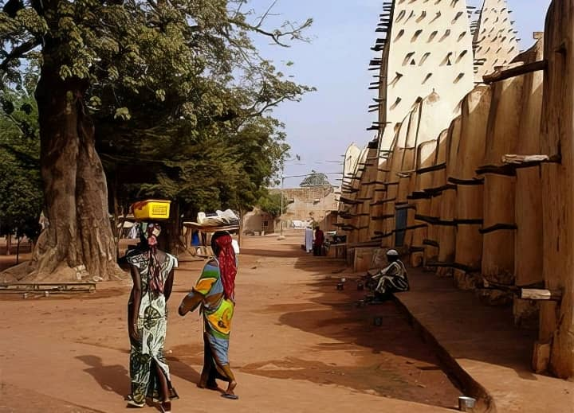
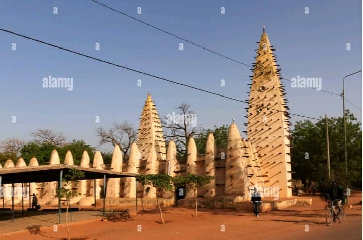
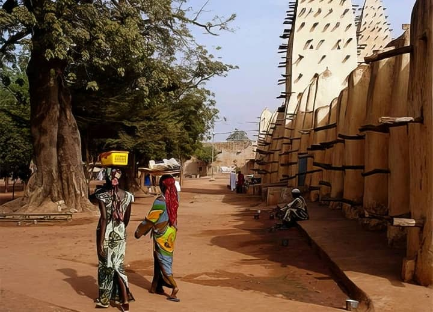
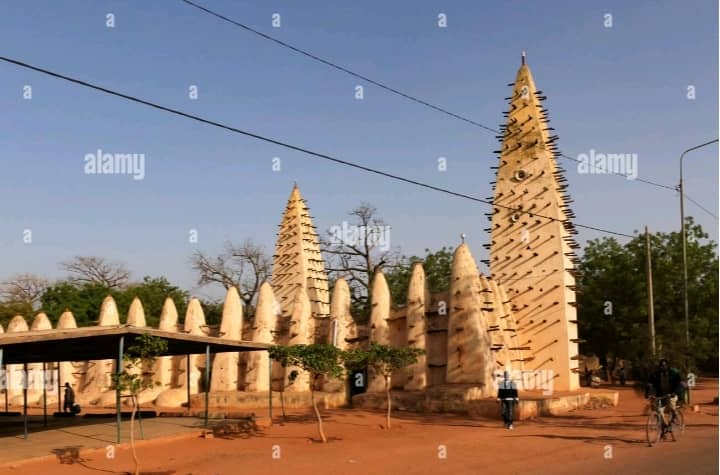

À propos de la Grande Mosquée
Construite au début du XXe siècle, la Grande Mosquée de Bobo-Dioulasso est l'un des plus anciens édifices religieux du pays. Bâtie en terre battue, elle présente le style architectural soudanais, typique de l'Afrique de l'Ouest.
Elle a été édifiée avec la collaboration du roi de Sya et de la population musulmane locale. La mosquée est non seulement un symbole de paix et de spiritualité, mais également un élément important du patrimoine historique de Bobo-Dioulasso.
Galerie
 



Informations pratiques
Située en plein cœur de Bobo-Dioulasso, la Grande Mosquée est facilement accessible à pied depuis le centre-ville.
Les visites sont généralement possibles en dehors des heures de prière. Il est demandé de respecter le lieu de culte en s'habillant de manière décente et en laissant ses chaussures à l'entrée.